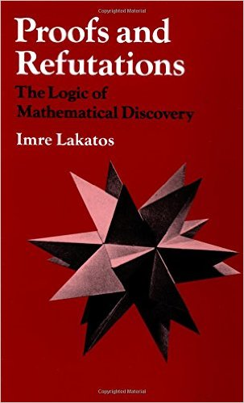
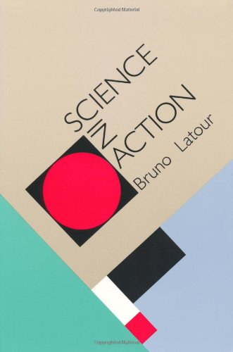
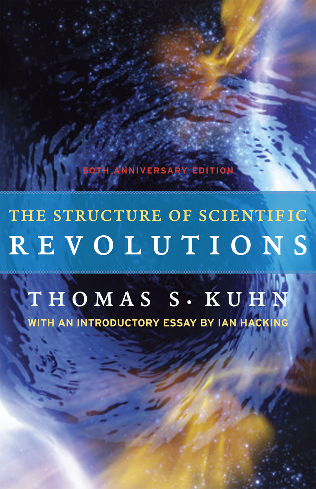

Philosophy of science books every computer scientist should read
When I tell my fellow computer scientists or software developers that I'm interested in philosophy of science, they first look a bit confused, then we have a really interesting discussion about it and then they ask me for some interesting books they could read about it. Given that Christmas is just around the corner and some of the readers might still be looking for a good present to get, I thought that now is the perfect time to turn my answer into a blog post!
So, what is philosophy of science about? In summary, it is about trying to better understand science. I'll keep using the word science here, but I think engineering would work equally well. As someone who recently spent a couple of years doing a PhD on programming language theory, I find this extremely important for computer science (and programming). How can we make better programming languages if we do not know what better means? And what do we mean when we talk about very basic concepts like types or programming errors?
Reading about philosophy of science inspired me to write a couple of essays on some of the topics above including What can programming language research learn from the philosophy of science? and two essays that discuss the nature of types in programming languages and also the nature of errors and miscomputations. This blog post lists some of the interesting books that I've read and that influenced my thinking (not just) when writing the aforementioned essays.
Philosophy of science reading list
The books I enjoyed the most are then ones that in some way talk about how science or mathematics actually works - pointing out some of the tricky aspects of scientific knowledge acquisition (can the scientific method work?) scientific practice (do we actually follow the scientific method?) and also the difference between how we talk about scientific history and how it actually happened.
What Is This Thing Called Science?
Alan Chalmers, Open University Press, 1999 (third edition)
The undoubted success of physics over the last three hundred years (...) is to be attributed to the application of a special method, 'the scientific method'. Therefore, if [other disciplines] are to emulate the success of physics then that is to be achieved by first understanding (...) and then applying [it].
This book is a brief and accessible introduction to philosophy of science (it is also commonly used as a textbook). It gives a good overview of the kind of questions that philosophy of science might ask and it covers the classic works in the field including some of those mentioned below. This was one of the first books that I've read and it gave me enough background to read other more complicated works and also a number of good pointers what to read next.
This book was largely the inspiration for the essay What can programming language research learn from the philosophy of science? As is the case with much of philosophy of science, the first part of the book starts with physics as an example of a successful scientific discipline. Topics like scientific experiments, scientific entities and falsification are probably less directly useful for computer science, but even that has some interesting implications. The second part covers different works that try to find structure in the scientific method, which is (I think) very relevant to computing.
Proofs and Refutations
Proofs and Refutations: The Logic of Mathematical Discovery
Imre Lakatos, Cambridge University Press, 1976
It frequently happens in the history of thought that when a powerful new method emerges the study of those problems which can be dealt with by the new method advances rapidly (...) while the rest tends to be ignored or even forgotten, its study despised.
If you want to read just one book from the list (and prefer a shorter one), make it this one. It would fall more into philosophy of mathematics than into philosophy of science, but it is great read especially if you are interested in topics like programming language theory (which is perhaps more mathematics than science).
The book is an exploration of the history and mathematical discussions about the Euler characteristic of polyhedra. This formula works beautifully for simple polyhedra, but what happens when we look at some less usual cases? Do we change the formula (turning a simple beautiful one into ugly and complex one)? Or do we instead say that odd cases are not real polyhedra? As a bonus, the book is written in a very engaging way!
Science in Action
Bruno Latour, Harvard University Press, 1987
[W]e are confronted with two almost simultanoues superpositions: Nature is the final cause of the settlement of all controversises,once controversies are settled. As long as they last, Nature will appear simply as the final consequence of the controversies
When you wish to attack a colleague's claim, criticize a world-view, modalise a statement you cannot just say that Nature is with you; 'just' will never be enough. You are bound to use other allies besides Nature. If you succeed, then Nature will be enough and all the other allies and resources will be made redundant.
The summary of the book is that understanding science and history of science is much more complicated than you would think. It looks at a number of aspects of actually doing science and engineering.
What academic papers says is largely dependent on how they are used by those that refer to them later. A theory becomes an unquestionable fact when enough people believe in it and convincing others is a matter of finding shared goals and enough alies such as papers, experiments and machines. The book also makes you think very differently about history of science, because we only see the resolved controversies (facts!) but we rarely see how they actually became facts.
(Thanks to Mathias Brandewinder for recommending this book to me!)
Against Method
Paul Feyerabend, Verso 2010 (third edition)

It is clear, then, that the idea of a fixed method (...), rests on too naive a view of man and his social surroundings. To those who look at the rich material provided by history and who are not intent on impoverishing it in order to please their lower instincts, their carving for intellectual security in the form of clarity, precision, 'objectivity', 'truth', it will become clear that there is only one principle that can be defended under all circumstances and in all stages of human development. It is the principle: anything goes.
This is the perfect book to read if you think that our current methods for doing things are a bit too constraining and are perhaps not always helpful. Must-read if you are working on programming language theory, but I think many software developers would find it inspiring too. The book is perhaps the most controversial one on this list and is sometimes labelled as anti-scientific, but his book is a refreshing read and I think there is a lot of great points in it. You should read it, but you do not have to agree with everything!
The key idea is that there is no single scientific method that would work in all cases. Different periods of time or different communities can follow a method that is useful, but many great discoveries of the past were not following what would have been the "scientific method" back then. The requirement of following a fixed method deflects the course of investigation into narrow channels of things already understood.
The Structure of Scientific Revolutions
Thomas Kuhn, University of Chicago Press, 1996
Under normal conditions the research scientist is not an innovator but a solver of puzzles, and the puzzles upon which he concentrates are just those which he believes can be both stated and solved within the existing scientific tradition.
Confronted with anomaly or with crisis, scientists take a different attitude toward existing paradigms, and the nature of their research changes accordingly. The proliferation of competing articulations (...), the recourse to philosophy and to debate over fundamentals, all these are symptoms of a transition from normal to extraordinary research.
I read this book many years ago, but it definitely stuck in my head and it inspired me to get back to philosophy of science recently. It looks at the history (mostly physics) and discusses how science evolves. Most of the time, scientists are working within established paradigm and follow the rules of the paradigm (this is the puzzle-solving activity). When the paradigm reaches crisis and puzzles can no longer be solved, a paradigm shift happens. This not only establishes a new paradigm, but it also changes the problems that matter. The interesting aspect is that we cannot really compare the work done in different paradigms, because they do not solve the same problems. This is called incommensurability. This means that it becomes hard to talk about scientific progress.
Scientific paradigms in the Kuhnian sense might not really apply directly to computer science or software engineering - they are typically large scale and shared by the whole community. However, there is still a lot of interesting ideas. For example, some of the discussion about types in programming look very much like a case of incommensurability!
A Science Of Operations
A Science of Operations: Machines, Logic and the Invention of Programming
Mark Priestley, Springer, 2010
Internal accounts of technical invention often treat episodes of innovation as pure moments of inspiration which are not amenable to analysis and explanation. This is a consequence of a perspective, known as the Whig interpretation of history, which sees in the past only those aspects relevant to the present.
In contrast, this book [emphasizes] the work involved in the construction of new concepts or techniques that may now seem to be obvious and unquestionable, the alternatives that were considered, and the reasons behind the choices that were made by the historical actors.
Many of the books on philosophy of science mentioned above are based on the history of science. Kuhn is looking for developments leading to paradigm shifts; Feyerabend is looking at different methods scientists used and Latour is looking at the social connections between scientists. That's why a solid book about history of computing is a great complement to the philosophy of science books - and Science of Operations is also a real pleasure to read!
The book looks at the history of programming starting with Charles Babbage and Ada Lovelace, looking at Turing, ENIAC and EDVAC and wrapping-up with FORTRAN, Algol, Simula and Smalltalk. The unique thing is that that book tries to understand the context and often explains the missing pieces in the middle that we do not remember, but that were crucial inspirations for the actual innovators. For example, did you know that Babbage might have been inspired by Adam Smith's division of labour theory and that early stored-program machines did not have conditional jump? (Programmers implemented it using amazing workarounds instead!)
More on Feyerabend's Against Method
I think all of the books mentioned above (and many others) would deserve a lot more attention and thanks to the fantastic Papers We Love initiative, I had a chance to talk about one of them in last time I was in New York.
I picked Paul Feyerabend's Against Method because I think his call for a more open approach to science is extremely important. In the talk, I also tried to relate some of the nice thoughts from the book with various topics in programming and computer science. The recording is available on the Papers We Love web site (thanks for producing a high quality recording!)

Summary
No matter if you are software developer or computer scientist, reading a little bit about philosophy of science can give you a new perspective in many ways:
-
Methodology. Can we learn something from other sciences so that computer science and software development practices improve? How does the scientific method do this in other disciplines? (And is there such thing in the first place?)
-
What things are. Every discipline has basic tools, entities and concepts that it uses, but what is their nature? When does it make sense to compare things and what discussions are meaningless?
-
History and progress. How can we learn and better understand the history of our discipline? When we look at the history, are we understanding it in the right context? Or do we subtly mix the history with our modern understanding? And when is this a problem?
-
Theory and practice. How do computer scientists actually work and write papers? When you read a paper, what can you expect to see there? And what thoughts will it (almost) never question because they are taken for granted?
In this blog post I shared some of the books that I read on the topic in the last few years, that I found interesting and that even inspired me to write a couple of essays on this topic myself. There are many great books missing. I have a couple of my reading list already, but I always welcome recommendations. Send them to @tomaspetricek!
Published: Thursday, 10 December 2015, 9:42 PM
Author: Tomas Petricek
Typos: Send me a pull request!
Tags: philosophy, research, talks